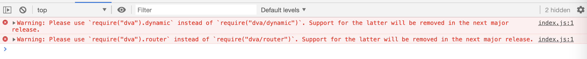
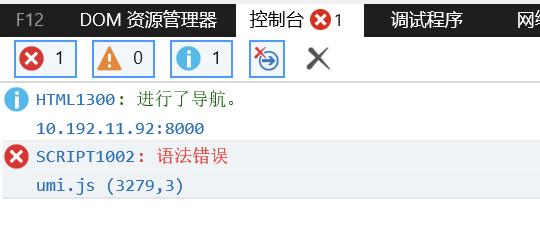

<!DOCTYPE html>
<html>
  <head>
    <title>超级好用的流程库 - ggEditor - lulujianglab Blog</title>
    <link href="../assets/common.css" rel="stylesheet"></link>
    <link href="../assets/hl.css" rel="stylesheet"></link>
    <link href="../assets/font.css" rel="stylesheet"></link>
    <link rel="stylesheet" href="https://cdnjs.cloudflare.com/ajax/libs/KaTeX/0.10.0/katex.min.css">
  </head>
  <body>
    <div class="wrapper">
      <div class="title-wrapper">
          <h1 class="title">超级好用的流程库 - ggEditor</h1>
          <p class="post-date">2019-07-01</p>
      </div>
      <div class="content" id="content">
        <div class="main" id="main">
          <p>在一些中后台应用的开发中，有些业务往往需要用到流程设计器，比如：管理网络、审批流程等等...正是因为有多种业务都需要使用到流程图的功能，所以对于能快速产出一个流程设计器是非常必须的</p>
<h2>工具选择</h2>
<p>古话说的好，预先善其事，必先利其器。所以首先要做的就是选择一个合适的开源基础库，站在巨人的肩膀上，总是跑的更快</p>
<p>开源时代，社区的资源总是非常丰富，身为小程序媛的我漏出幸福的微笑😊</p>
<ul>
<li><a href="http://resources.jointjs.com/">joint.js</a> 支持多种交互式图表创建，但有收费版本和免费版本的区分，更丰富的功能可能就需要收费了</li>
<li><a href="https://github.com/jsplumb/jsplumb">jsPlumb</a> 是一套完全开源的流程图创建工具，上手简单，底层是基于 Canvas 技术，但唯一美中不足的是，基于 jQuery，所以对于大批量流程的操作，在性能上可能不能达到最佳</li>
<li><a href="https://github.com/jsplumb/jsplumb">d3</a> d3 应该很多人都熟悉，非常好的可视化基础库，相应的，上手成本相对高一些</li>
<li><a href="http://spritejs.org/#/zh-cn/index">spritejs</a> 同样是基于 Canvas，据说是月影大大一个人写的（✨✨眼），官网写的超好啦...</li>
<li><a href="https://github.com/gaoli/GGEditor">ggEditor</a> 蚂蚁金服数据可视化团队的大神高力结合 react + g6 开源的流程库，它的前身是 <a href="https://github.com/antvis/g6-editor">g6Editor</a>，也是他们团队开源的产品，官方说法是学习成本太高，停止了对外支持。底层也是 Canvas 技术，虽然 ggEditor 目前开源的文档不多，但是潜力无穷，使用起来非常便捷，上手也比较简单，貌似是去年开源的，社区相对还没那么活跃，所以它的使用依然是一个摸索的过程</li>
</ul>
<p>最终，我选择了 <code>ggEditor</code>，因为它完全开源，使用很简单，很轻量级，而且天然基于 react，非常完美</p>
<h2>快速构建</h2>
<h3>引用 ggEditor</h3>
<p>我们可以按照 github 上 <a href="https://github.com/gaoli/GGEditor#installation">ggEditor</a> 的安装步骤操作</p>
<p>启动之后的界面效果可以参考：<a href="http://ggeditor.com/demo/#/flow">http://ggeditor.com/demo/#/flow</a></p>
<p>我们可以看到它的官方 demo 功能是比较齐全的，基本上已经实现了一个元素拖拽及元素属性编辑的完整功能</p>
<h3>属性解析</h3>
<p>我们知道整个流程编辑器基本可以分为三部分，一部分是左侧的元素面板区，另一部分是右侧的元素属性配置区，再就是中间的流程展示区，每个流程元素上可以有相应的事件响应</p>
<p>所以这里主要介绍以上相应的属性</p>
<ul>
<li>
<p><a href="http://ggeditor.com/docs/api/itemPanel.zh-CN.html"> Item 节点配置</a></p>
<ul>
<li>其中 type 有 node 和 edge 两个值可选，node 就是节点，edge 是连接节点的连线，当我们初始化加载元素和保存导出元素数据时也是以这两种为key</li>
<li>shape 可选参数有：圆形 <code>flow-circle</code> | 圆角矩形 <code>flow-rect</code> | 菱形 <code>flow-rhombus</code> | 椭圆矩形 <code>flow-capsule</code></li>
<li>src 可以引入一张图片作为当前节点的预览样式</li>
<li>编辑器画板中的样式是由 model 决定，model 默认会继承 <Item> 组件的 <code>props.shape</code> 和 <code>props.size</code>，所以通常 model 只需配置 color、label。配置项如下：<pre class="hljs"><code>model: {
  <span class="hljs-attr">color</span>: <span class="hljs-string">'#333'</span>, <span class="hljs-comment">// 节点主题色（选中颜色、激活颜色基于该值）</span>
  size: [<span class="hljs-number">10</span>, <span class="hljs-number">10</span>], <span class="hljs-comment">// [x, y] 节点尺寸</span>
  shape: <span class="hljs-string">'cirle'</span>, <span class="hljs-comment">// 图形：圆形 circle | 圆角矩形 rect | 菱形 rhombus | 椭圆矩形 capsule</span>
  style: { <span class="hljs-comment">// 关键形样式(可覆盖color的普通样式，但激活、选中依然无效，坑！)</span>
    fill: <span class="hljs-string">'red'</span>, <span class="hljs-comment">// 填充背景</span>
    stroke: <span class="hljs-string">'blue'</span> <span class="hljs-comment">// 形状描边</span>
  },
  <span class="hljs-attr">label</span>: { <span class="hljs-comment">// 节点标签</span>
    text: <span class="hljs-string">'开始节点'</span>, <span class="hljs-comment">// 文本内容</span>
    fill: <span class="hljs-string">'green'</span> <span class="hljs-comment">// 文本颜色</span>
  },
  <span class="hljs-attr">index</span>: <span class="hljs-number">1</span> <span class="hljs-comment">// 渲染层级</span>
}
</code></pre>
</li>
</ul>
</li>
<li>
<p><a href="http://ggeditor.com/docs/api/flow.zh-CN.html">Flow 编辑器配置</a><br>
在 <FLow> 组件上，最重要的是监听事件：<br>
<code>js &lt;Flow onNodeClick={(e) =&gt; { console.log(e); }}/&gt;</code><br>
更多的我们可以参考<a href="http://ggeditor.com/docs/api/pageEvents.zh-CN.html">页面事件 Page Events</a></p>
<ul>
<li>
<p><strong>拖拽节点时，区分是新节点还是旧节点</strong>。可以用<code>onDrop</code> - 监听拖拽放置事件，如果是从元素面板区拖拽新节点到画布上，<code>onDrop</code> 返回的事件对象中 <code>currentItem</code> 和 <code>currentShape</code> 都是 <code>undefined</code>。而如果是挪动旧节点的位置，这两个字段会记录拖动的图形图项。当然，也可以监听节点拖动结束事件 - <code>onNodeDragEnd</code>，这个事件只会在拖动画布上的节点时才触发</p>
</li>
<li>
<p><strong>锚点连线取消，比如有一个需求是当目标节点已经连线的时候，就取消连线</strong>。可以用 <code>onAfterChange</code> 事件，根据 item(type: 'edge') 或者 model(source:'xxxx') 对象中的参数进行判断。最后用结合异步函数和 <code>&lt;withPropsAPI&gt;</code> 组件取消连线：</p>
<pre class="hljs"><code>handleAddItem = <span class="hljs-function">(<span class="hljs-params">e</span>) =&gt;</span> {
  <span class="hljs-keyword">this</span>.apiAction(<span class="hljs-string">'undo'</span>)
}

apiAction = <span class="hljs-function">(<span class="hljs-params">command</span>) =&gt;</span> {
  <span class="hljs-keyword">const</span> { propsAPI } = <span class="hljs-keyword">this</span>.props
  setTimeout(<span class="hljs-function"><span class="hljs-params">()</span> =&gt;</span> {
    propsAPI.executeCommand(command)
  }, <span class="hljs-number">0</span>)
}
</code></pre>
<p><code>&lt;withPropsAPI&gt;</code>是 ggEditor 自带的包装组件，同时它又自带 <code>propsAPI</code> 属性，更多的属性值我们可以参考 <a href="http://ggeditor.com/docs/api/propsAPI.zh-CN.html">propsAPI</a></p>
</li>
<li>
<p><strong>保存数据</strong>。上面 <code>&lt;withPropsAPI&gt;</code> 提供的 <code>propsAPI</code> 属性中，包含了 <code>save()</code> 方法。我们可以封装一个 <code>SaveButton</code> 组件，暴露一个 <code>onSave</code> 事件，然后用 <code>&lt;withPropsAPI&gt;</code> 包装该组件。具体可参考 <a href="https://codesandbox.io/s/r4kzkn441m">demo</a></p>
</li>
<li>
<p><strong>自定义键盘操作</strong>。可以通过监听 <code>onKeyDown</code> 和 <code>onKeyUp</code> 手动创建多个快捷命令</p>
<pre class="hljs"><code>handleKeyUp = <span class="hljs-function"><span class="hljs-params">e</span> =&gt;</span> {
  <span class="hljs-comment">// 键盘抬起时重置记录的按键</span>
  <span class="hljs-keyword">this</span>.keysDown = <span class="hljs-string">''</span>
}

handleKeyDown = <span class="hljs-function"><span class="hljs-params">e</span> =&gt;</span> {
  <span class="hljs-comment">// 拼接按键命令</span>
  <span class="hljs-keyword">if</span> (<span class="hljs-keyword">this</span>.keysDown.length === <span class="hljs-number">0</span>) {
    <span class="hljs-keyword">this</span>.keysDown = e.domEvent.key
  } <span class="hljs-keyword">else</span> {
    <span class="hljs-keyword">this</span>.keysDown += <span class="hljs-string">`+<span class="hljs-subst">${e.domEvent.key}</span>`</span>
  }

  <span class="hljs-comment">// 自定义键盘操作</span>
  <span class="hljs-keyword">switch</span> (<span class="hljs-keyword">this</span>.keysDown) {
    <span class="hljs-keyword">case</span> <span class="hljs-string">'Meta+c'</span>:
      <span class="hljs-keyword">this</span>.diyCopyCommand()
      <span class="hljs-keyword">break</span>
    <span class="hljs-keyword">case</span> <span class="hljs-string">'Control+c'</span>:
      <span class="hljs-keyword">this</span>.diyCopyCommand()
      <span class="hljs-keyword">break</span>
    <span class="hljs-keyword">case</span> <span class="hljs-string">'Meta+v'</span>:
      <span class="hljs-keyword">this</span>.diyPasteCommand()
      <span class="hljs-keyword">break</span>
    <span class="hljs-keyword">case</span> <span class="hljs-string">'Control+v'</span>:
      <span class="hljs-keyword">this</span>.diyPasteCommand()
      <span class="hljs-keyword">break</span>
    <span class="hljs-keyword">default</span>: <span class="hljs-keyword">break</span>
  }
}

<span class="hljs-comment">// 自定义复制</span>
diyCopyCommand = <span class="hljs-function"><span class="hljs-params">()</span> =&gt;</span> {
  <span class="hljs-keyword">const</span> { propsAPI } = <span class="hljs-keyword">this</span>.props
  <span class="hljs-keyword">let</span> selected = propsAPI.getSelected()
  <span class="hljs-keyword">if</span> (selected.length &gt; <span class="hljs-number">0</span>) {
    <span class="hljs-keyword">this</span>.commandAction(<span class="hljs-string">'copy'</span>)
  }
}

<span class="hljs-comment">// 自定义粘贴</span>
diyPasteCommand = <span class="hljs-function"><span class="hljs-params">()</span> =&gt;</span> {
  <span class="hljs-keyword">this</span>.commandAction(<span class="hljs-string">'paste'</span>)
}
</code></pre>
</li>
</ul>
</li>
</ul>
<p>以上只是 ggEditor 的核心组件和功能。还有很多组件没有提交，比如 <code>&lt;Minimap&gt;</code>、<code>&lt;ContextMenu&gt;</code>、<code>&lt;Toolbar&gt;</code> ，我们可以具体去看项目 demo</p>
<p>其他的属性解析可以参考<a href="http://ggeditor.com/docs/">官网 API</a></p>
<h3>自定义节点</h3>
<p>如果 <code>&lt;Item&gt;</code> 自带的参数不满足需求，可以使用 <code>&lt;ReisterNode&gt;</code> 来封装自己的 <code>&lt;Item&gt;</code></p>
<p>比如自定义一个 <code>start-node</code>，就可以自行封装一个 node 组件</p>
<p>具体可以参考 <a href="https://github.com/gaoli/GGEditor/issues/76">Issues</a></p>
<h2>兼容 IE11</h2>
<p>ggEditor 是基于 umijs 脚手架的， umijs不得不说，太简单粗暴，默认不支持IE，如果需要支持，需要我们开启<a href="https://umijs.org/zh/config/#targets">配置</a></p>
<p>需要在 .umirc.js 中配置</p>
<pre class="hljs"><code>targets: {
  <span class="hljs-attr">ie</span>: <span class="hljs-number">11</span>,
}
</code></pre>
<h3>dva 版本问题</h3>
<p>Chrome warning</p>
<p></p>
<p>IE bug</p>
<p></p>
<p>查看后发现都是指向同一个问题，因为 dva 的最新版本，具体可以看看<a href="https://github.com/umijs/umi/issues/2373">升级dva最新版提示Warning: Please use <code>require(&quot;dva&quot;).dynamic</code> instead of <code>require(&quot;dva/dynamic&quot;)</code>. Support for the latter will be removed in the next major release.</a> 和 <a href="https://github.com/dvajs/dva/issues/2112">2.6.0-beta.4 版本新抛出警告 </a></p>
<p>为了快速解决这个问题，我去瞅了眼 <a href="https://github.com/ant-design/ant-design-pro/blob/master/package.json">ant-design-pro</a>，发现它三天前提交的，但是dva版本仍是用的低版本，非常 nice</p>
<p>以上，便可快速解决 IE11 白屏的问题</p>
<h2>参考文档</h2>
<p><a href="https://www.cnblogs.com/wisewrong/p/11018746.html">在 React 项目中引入 GG-Editor 编辑可视化流程</a></p>
<p><a href="https://github.com/gaoli/GGEditor/issues/130">常见问题</a></p>
<p>PS：终于用上自己写的博客系统写文章啦，体验还是非常八错的 😊😊</p>

        </div>
        <div class="footer">
          Powered by <a href="https://github.com/lulujianglab/pudding/tree/dev">PuddingNote</a>
        </div>
      </div>
      <div class="toc_nav">
        <div class="article_nav" id="article_nav">
        </div>
      </div>
      <div class="scroll post-top" id="top">
        <a href="javascript:void(0)" onclick="toBackTop()">
          <i class="iconfont icon-shangsanjiaoxing"></i>
        </a>
      </div>
      <div class="scroll back">
        <a href="../../">
          <i class="iconfont icon-shouye"></i>
        </a>
      </div>
    </div>

    <script>
      function toBackTop(){
        document.documentElement.scrollTop = 0
      }

      function onScrollToTop() {
        let scrollTop = window.pageYOffset || document.documentElement.scrollTop || document.body.scrollTop
        // 回到顶部
        if (scrollTop > 300) {
          document.getElementById("top").style.display = 'block'
        } else {
          document.getElementById("top").style.display = 'none'
        }
        // 导航目录
        if(scrollTop > 100) {
          var navNode = document.querySelector('#article_nav')
          navNode.style.position = 'fixed'
          navNode.style.top = '16px'
        } else {
          var navNode = document.querySelector('#article_nav')
          navNode.style.position = ''
          navNode.style.top = ''
        }
      }

      function addAchor() {
        var allNodes = document.getElementById('main').childNodes
        // var nodesH =  [...allNodes].map((item, index) => {
        //   if(item.tagName && item.tagName.substr(0,1).toUpperCase() === "H") {
        //     return item.tagName
        //   }
        // })
        var mapNodes = [...allNodes].forEach((item, index) => {
          if(item.tagName && item.tagName.substr(0,1).toUpperCase() === "H") {
            var contentH = item.innerHTML // 标题内容
            var menuid = "menu-" + item.tagName + "-" + index.toString() // 增加当前元素的id
            item.setAttribute('id',menuid)
            var spaceNum = ''
            if (item.tagName === 'H1') {
              spaceNum = ''
            } else if (item.tagName === 'H2') {
              spaceNum = '&nbsp;&nbsp;&nbsp;&nbsp;'
            }  else if (item.tagName === 'H3') {
              spaceNum = '&nbsp;&nbsp;&nbsp;&nbsp;&nbsp;&nbsp;'
            } else if (item.tagName === 'H4') {
              spaceNum = '&nbsp;&nbsp;&nbsp;&nbsp;&nbsp;&nbsp;&nbsp;&nbsp;&nbsp;&nbsp;'
            } else if (item.tagName === 'H5') {
              spaceNum = '&nbsp;&nbsp;&nbsp;&nbsp;&nbsp;&nbsp;&nbsp;&nbsp;&nbsp;&nbsp;&nbsp;&nbsp;&nbsp;&nbsp;'
            } else if (item.tagName === 'H6') {
              spaceNum = '&nbsp;&nbsp;&nbsp;&nbsp;&nbsp;&nbsp;&nbsp;&nbsp;&nbsp;&nbsp;&nbsp;&nbsp;&nbsp;&nbsp;&nbsp;&nbsp;&nbsp;&nbsp;'
            }
            var node = document.createElement('a')
            node.setAttribute('href','#' + menuid)
            node.setAttribute('class', item.tagName)
            node.innerHTML = spaceNum + contentH
            document.getElementById('article_nav').appendChild(node) // 将新创建的目录节点插入导航栏
          }
        })
      }

      window.onscroll = onScrollToTop

      window.onload = function() {
        addAchor()
      }
    </script>
  </body>
</html>